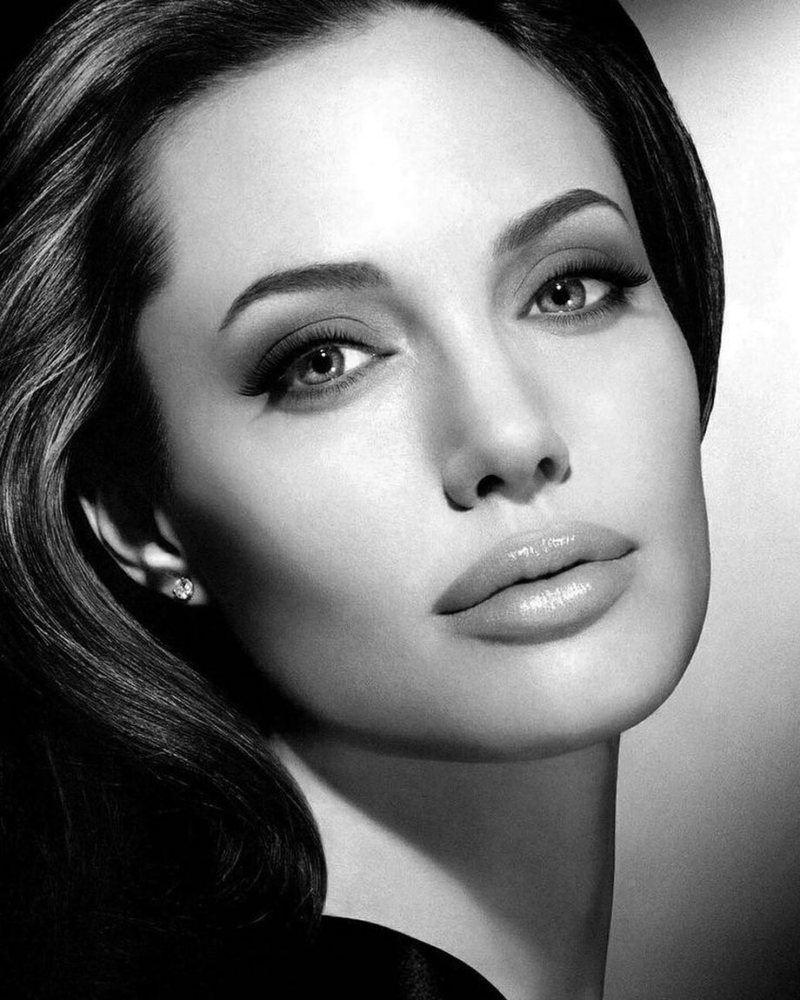
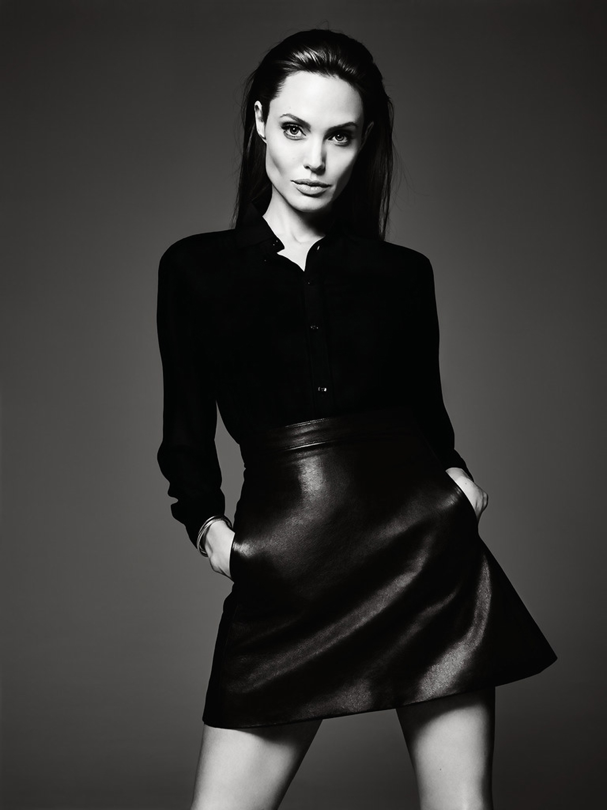

Анджелина Джоли
Биография и личная жизнь
Анджелина Джоли́ — американская актриса кино, телевидения и озвучивания, кинорежиссёр, сценаристка, продюсер, фотомодель, посол доброй воли ООН. Обладательница премии «Оскар», трёх премий «Золотой глобус» (первая актриса в истории, три года подряд выигравшая премию) и двух «Премий Гильдии киноактёров США». Дебютировала в кино в 1982 году, сыграв роль в комедийном фильме «В поисках выхода» (где снимались также её отец и мать), однако известность получила после того, как сыграла героиню видеоигр Лару Крофт в фильмах «Лара Крофт: Расхитительница гробниц» и «Лара Крофт: Расхитительница гробниц 2 — Колыбель жизни». В 2009, 2011 и 2013 годах по версии журнала Forbes Джоли была названа самой высокооплачиваемой актрисой Голливуда
Её наиболее успешными с коммерческой стороны фильмами стали «Малефисента» (сборы в мировом прокате — 758 миллионов долларов США), «Мистер и миссис Смит» (сборы в мировом прокате — 478 миллионов долларов США), «Особо опасен» (341 миллион долларов США), «Солт» (293 миллиона долларов США), а также «Турист» (278 миллионов долларов США), «Лара Крофт: Расхитительница гробниц» (274 миллиона долларов США) и картина с участием Николаса Кейджа «Угнать за 60 секунд» (237 миллионов долларов США)
Анджелина Джоли Войт родилась в Лос-Анджелесе (США, штат Калифорния), в семье известного американского актёра Джона Войта и франкоканадской актрисы Маршелин Бертран. В силу своего происхождения Джоли унаследовала кровь нескольких народов: со стороны отца — словацкого и немецкого (по отцу), со стороны матери — франкоканадского, а также голландского и немецкого. Сама Джоли утверждает, что по материнской линии она имеет ещё и ирокезские корни, хотя её отец отрицает данный факт; единственными индейскими предками, которых удалось проследить в родословной Маршелин Бертран, оказались гуроны XVII века. У Анджелины есть старший брат — Джеймс Хейвен. Её крёстными родителями стали знаменитые актёры Максимилиан Шелл и Жаклин Биссет. По отцу она приходится племянницей Чипу Тейлору. Родители Джоли разошлись в 1976 году (развод был оформлен только два года спустя), и мать с годовалой Анджелиной и её братом переехала в Нью-Йорк. Год спустя Войт получил «Оскар» за свою роль в «Возвращении домой», а Бертран была вынуждена оставить свои мечты об успешной актёрской карьере и посвятила своё время воспитанию детей. Она часто водила их в кино, чем пробудила у Джоли интерес к актёрству. По крайней мере, именно этим та объясняла позже в прессе свой выбор в пользу кинематографа (а не успешной карьерой отца).
Когда Анджелине исполнилось 11 лет, семья вернулась в Лос-Анджелес, где Джоли два года проучилась в киношколе Ли Страсберга, а также в высшей школе Беверли-Хиллз. Анджелина оказалась далеко не единственной студенткой с актёрскими амбициями, однако всегда чувствовала себя аутсайдером из-за своего нестандартного внешнего вида, привычки одеваться в одежду из секонд-хенда и худобы. Её уверенность в себе пострадала ещё сильнее после того, как все попытки стать моделью окончились неудачно. Позже Джоли признавалась, что чувствовала себя в то время сильно подавленной и несчастной, считала, что она бесполезна и, как следствие, начала наносить себе порезы и раны на тело. Однажды в интервью телеканалу CNN она сказала следующее:
В этом возрасте Анджелина носила исключительно чёрную одежду, красила волосы в красный цвет и, по собственным признаниям, ненавидела себя. Джоли не скрывает, что употребляла наркотики, в интервью «The Daily Mirror» в 1996 году она рассказала, что к 20 годам перепробовала практически всё, что возможно. В ходе телешоу «60 Minutes» в 2011 году она отметила, что пережила «тяжёлое время», и ей очень повезло, что она не умерла молодой